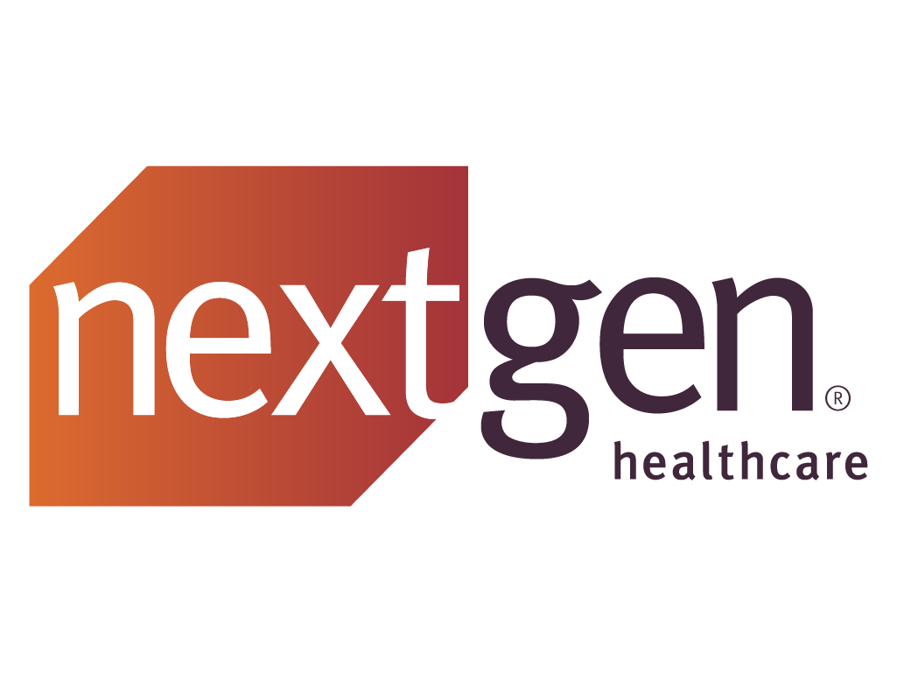
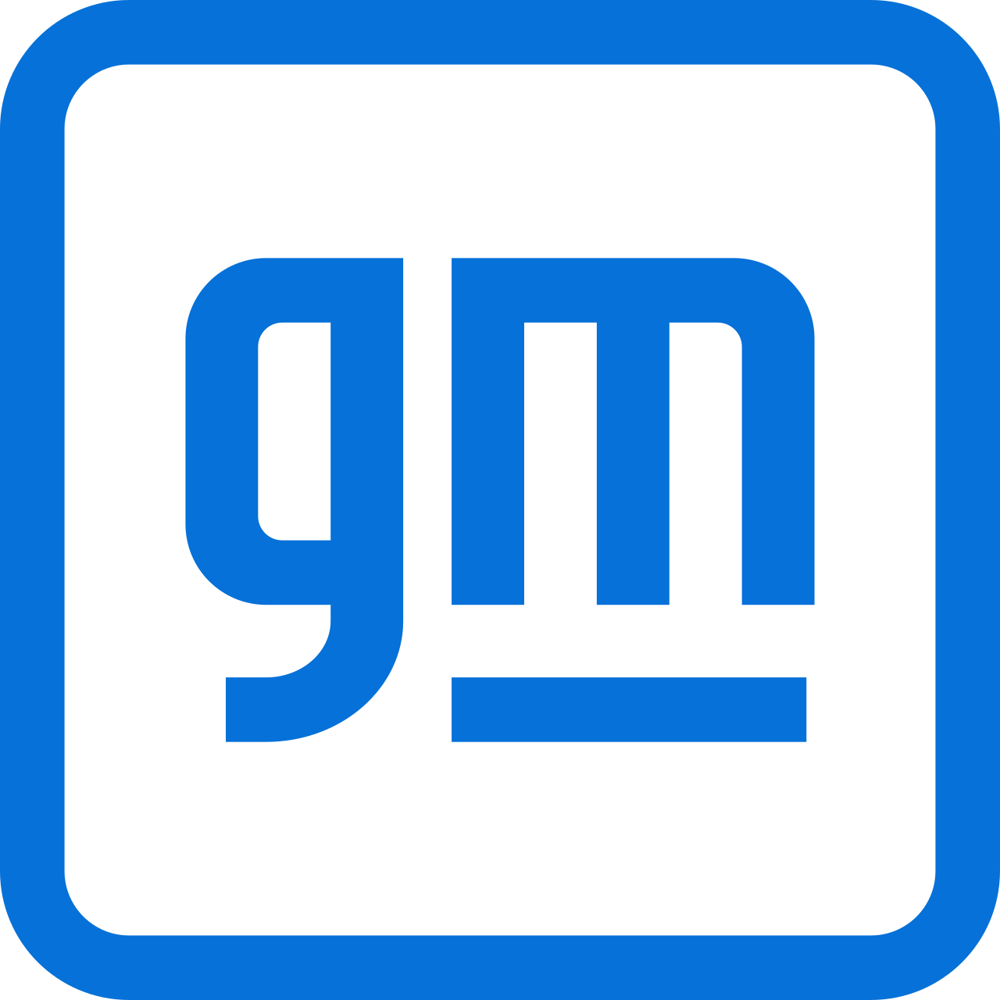
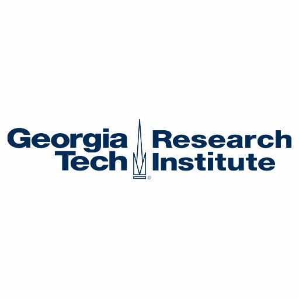

Experience
Principal Founding Engineer
Thundergraph (AI Startup)Nov 2024 — Jan 2026 · Part-time
Contributed to building the citations and traceability system and core backend for an AI-powered MBSE platform. Stood up AWS ECS container infrastructure for hosting. Migrated RBAC from MongoDB to Neo4j and replaced Auth0 with Keycloak for authentication. Drove SOC 2 compliance, participated in strategy meetings shaping product direction, and conducted intern interviews to build out the engineering team. thundergraph.ai

Software Engineer
Microsoft — RedmondApr 2021 — Present
Own cross-platform device management for iOS, macOS, and Linux Company Portal (Rust). Drive security, automation, and AI adoption across the Intune org. Resolved critical incidents impacting tens of thousands of devices. Built tenant automation that became the org-wide baseline. Led launch-day validation for macOS 26 and iOS 26. Architected Rust-based HTTP client with custom SSL/TLS, OCSP stapling, and TPM integration. Recognized for cross-org leadership and the "One Microsoft" mindset.

Software Engineer, R&D
NextGen Healthcare, Inc. — San DiegoOct 2019 — Apr 2021
Developed inbound/outbound message processors and ML-based customer attrition prediction using time series forecasting. Built ETL pipelines in Redshift, Jenkins deployment pipelines, redesigned the Patient Portal, and created a VR conversational agent using AWS Sumerian/Lex.

Software Engineer, Global Sites
General Motors Corp. — AtlantaJan 2016 — Oct 2019
Built a deep learning model (MLP + LSTM) analyzing social media sentiment that increased marketing campaign revenue and EBIT by 30%. Developed predictive IT dashboards with Microsoft Cognitive Services. Integrated Adobe Analytics across global GM sites. Built Spring Boot content archival systems and employee portals using Workday/SOAP APIs.

Software Engineer Co-op
GTRI — Intelligence & Robotics DivisionJan 2014 — Aug 2015
Developed object recognition APIs for deformable modeling research: 3D pose estimation from depth maps, multi-scale HOG feature extraction, SVM, and KNNs. Built software for a vision-based humanoid robot using line template matching and point clouds for 3D visual servoing.